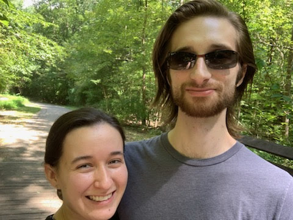
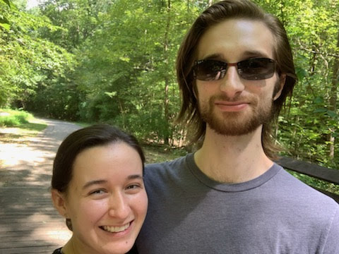

Our Story

"The Hedgehog and the Cactus"
- A pair of paintings by Ashley and Nicholas
Ashley is a soon-to-be vet, and Nicholas is a software developer. They met online with a dating app - "Coffee bagel bean" as Ashley loves to call it - neither of them really expecting anything from it. However, both of them ending up enjoying talking to the other and here they are, more than a year later and ready to get married.
Right from the start, Ashley and Nicholas have bonded over a shared love of animals. Well, almost from the start. The first date was a little rocky, until Nicholas accompanied Ashley to the Turtle Rescue Team Lab for an emergency. After meeting her patients, Nicholas ended up bonding with a special healing turtle named Trash Panda.

Trash Panda
Nicholas proposed at Duke Gardens. The pair had waited until after 5 pm when they could bring Goose along for the walk. It was terribly hot, and Ashley had just returned from Omaha, Nebraska from an externship and all she really wanted was a burger from Burger Bach, a place the pair loved to go to when they wanted a good burger. Nicholas chose a secluded bench in the Japanese gardens where he suggested they rest. Ashley was too focused on trying to get Goose to drink water that she did not notice Nicholas down on one knee. Unfortunatly, Nicholas could not get the ring box out of his pocket on one knee, so Ashley caught on pretty quickly that he was up to something. After that characteristically rocky start, Nicholas asked Ashley to marry him. She, of course, asked if he talked to her dad- and then she said yes.
The pair chose a Disney wedding because of how much Ashley loves Disney. Nicholas is enjoying being a kid again with planning a Disney wedding. Ashley and Nicholas chose October 15th because they both wanted a fall wedding; however, this day is particularly special because it was Ashley's late grandfather's birthday. The wedding will have subtle tributes to Ashley and Nicholas' shared love of animals and of course a few hidden Mickeys!
Ashley and Nicholas are very excited for you to witness their marrage and celebrate the next chapter of their lives together.
 
